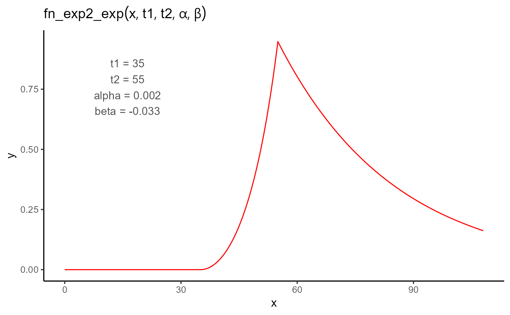

A piecewise function that models an initial exponential phase with quadratic time dependence,
followed by a second exponential phase with a different growth rate.
Usage
fn_exp2_exp(t, t1, t2, alpha, beta)
Arguments
- t
A numeric vector of input values (e.g., time).
- t1
The onset time of the response. The function is 0 for all values less than t1.
- t2
The transition time between the two exponential phases. Must be greater than t1.
- alpha
The curvature-controlled exponential rate during the first phase (t1 to t2).
- beta
The exponential growth rate after t2.
Value
A numeric vector of the same length as t, representing the function values.
Details
$$
f(t; t_1, t_2, \alpha, \beta) =
\begin{cases}
0 & \text{if } t < t_1 \\
e^{\alpha \cdot (t - t_1)^2} - 1 & \text{if } t_1 \leq t \leq t_2 \\
\left(e^{\alpha \cdot (t_2 - t_1)^2} - 1\right) \cdot e^{\beta \cdot (t - t_2)} & \text{if } t > t_2
\end{cases}
$$
Examples
library(flexFitR)
plot_fn(
fn = "fn_exp2_exp",
params = c(t1 = 35, t2 = 55, alpha = 1 / 600, beta = -1 / 30),
interval = c(0, 108),
n_points = 2000,
auc_label_size = 3,
y_auc_label = 0.15
)
